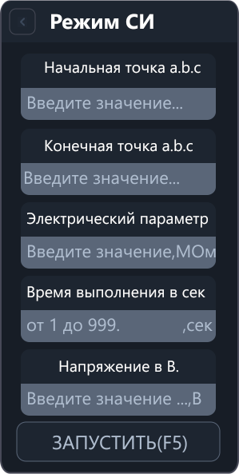
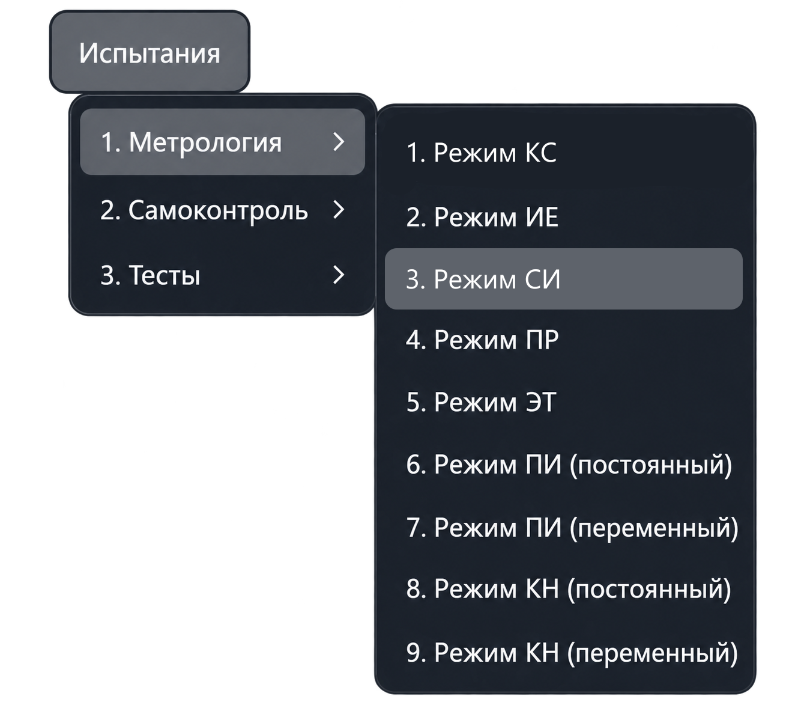

Утилита "Режим СИ"
Утилита измеряет сопротивление и определяет погрешность измерения сопротивления.
- "Начальная точка a.b.c" и "Конечная точка a.b.c" - входы АСК для подключения выводов магазина эталонных сопротивлений;
- "Электрический параметр" - задание нужного эталонного сопротивления (в МОм);
- "Время выполнения в сек" - время выполнения (в секундах);
- "Напряжение в В" - измерительное напряжение (в В)


После ввода параметров меню автоматически выполняются следующие действия:
- Начальная заданная точка подключается к шине A1;
- Конечная заданная точка подключается к шине B1;
- Высоковольтная испытательная установка устанавливает параметры измерения и подключается к шинам A1,B1;
- Производится измерение;
-
В протокол выводится сообщения вида:
$TST1 Rд.б=100МОм+-10.00% Rизм=99.95МОм Погр=-0.05%
$TST1 Измерений:1 Все норма ПОГРmin=-0.05% ПОГРmax=0